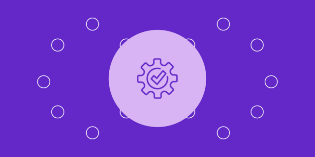

Últimos Proyectos


Como QA Tester, busco potenciar procesos y productos que ofrezcan una interacción fácil y fluida para los usuarios por medio del desarrollo y aplicación de escenarios de prueba robustos. Encuentro fascinante el Lean Design de productos y servicios, y estoy comprometida a encontrar la funcionalidad y practicidad que satisfaga las necesidades del cliente. Tengo sólidos conocimientos en control de calidad en el desarrollo de software y pruebas de aplicaciones móviles y web y estoy consolidando mis habilidades en automatización de pruebas. Soy una Comunicadora Social y Periodista con una pasión por el mundo del software y la innovación. Mi experiencia en la coordinación y gestión de proyectos sociales y de innovación me han permitido desarrollar una combinación única de creatividad y análisis para entender y realinear las necesidades de actores claves de negocio.
Soy hija, hermana de 5, amante de los animales, soñadora y cocinera entusiasta. Como QA Tester, busco potenciar procesos y productos que ofrezcan una interacción fácil y fluida para los usuarios por medio del desarrollo y aplicación de escenarios de prueba robustos. Encuentro fascinante el Lean Design de productos y servicios, y estoy comprometida a encontrar la funcionalidad y practicidad que satisfaga las necesidades del cliente. No soy desarrolladora web ni diseñadora gráfica aunque se me facilita leer código de programación, elevar propuestas de diseño y, sobre todo, me apasiona encontrar espacios de mejora para que todo funcione como debería funcionar. Tengo sólidos conocimientos en control de calidad en el desarrollo de software y pruebas de aplicaciones móviles y web y estoy consolidando mis habilidades en automatización de pruebas. Soy una Comunicadora Social y Periodista con una pasión por el mundo del software y la innovación. Mi experiencia en la coordinación y gestión de proyectos sociales y de innovación me han permitido desarrollar una combinación única de creatividad y análisis para entender y realinear las necesidades de actores claves de negocio. Tengo 10 años de experiencia laboral en diferentes áreas como la investigación, formulación, y gestión de proyectos en áreas de responsabilidad social, sostenibilidad ambiental e innovación. He participado y liderado la implementación, evaluación y sistematización de espacios multisectoriales que lleven ideas divergentes a propuestas de valor para las diferentes partes mediante el desarrollo de una red de aliados. También he implementado modelos de seguimiento y monitoreo de convenios y contratos de cooperación y el manejo de herramientas de investigación cuantitativa y cualitativas. Mi lengua nativa es el español y tengo un dominio alto de inglés escrito y hablado.